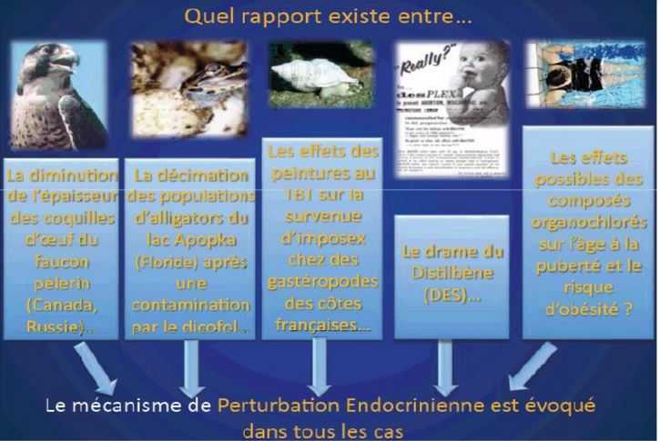
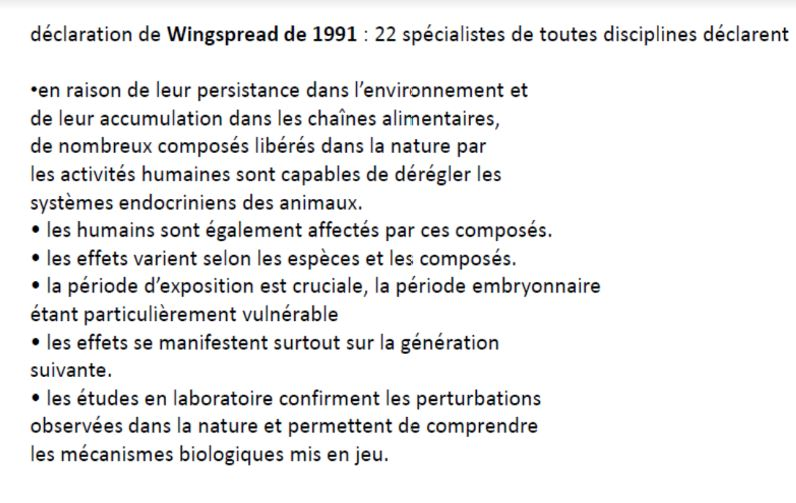

Les perturbations environnementales de la reproduction
I) Effet du réchauffement climatique
-
Ours polaire : Sa période de chasse à lieu principalement d'avril à juillet. Malheureusement, il y a une diminution de la banquise, ils sont donc en sous almentation et on a une diminution de taille des portées de 2-3 petits à 1 petit.
-
Puceron vert du pêcher, migre mi mai dans les années 1960 en Angleterre, alors qu'ajourd'hui, ils migrent à partir du 7 mai.
II) Les perturbateurs endocriniens
Découverte
- Les alligators du lac Apopka (Floride) ont une taille relativement petite de leur pénis lié à la présence d'un insecticide appelé DDE

Autre exemple

L'origne
- Médicaments
- Substances utilisées comme pesticide
- Incinération des déchets
Pendant longtemps, nous avons ignoré le rôle possible de ces substances
Effets des faibles modifications des équilibres hormonaux
-
Le distibène (limiter le risque de fausse couche), provoque une très forte augmentation de risque de cancer utérins chez les enfants issus. Provoque un effet sur la génération suivante
-
Le compotement des souris : Normalement le mâle est plus agressif que la femmelle qui est plus maternelle. Les femelles ayant été dans l'utérus developpé à côté d'un mâle deviennent autant agressifs que ceux-ci. Il y a donc un contrôle du comportement par les hormones sexuels. Dans l'utérus, une partie des hormones produites peuvent recevoir des hormones de ceux d'à côté.
Reconnaissance
